ReLeaf Perfusion
Bioreactor
Our bioreactor hardware turns engineered biology into a contained, controllable, and deployable biomanufacturing system.
Engineered B. subtilis grows in a stirred reservoir and circulates through the lumen side of a PES hollow‑fiber membrane; the protectant it secretes crosses into the shell side and leaves the machine, and the cells stay behind. The record below follows the team's write‑up: why a bioreactor, what the hardware does, the design, build, test and learn cycles, and how to rebuild it.
Last updated 28 September 2026
Purpose
1.1 From TgPGPR to a Bioreactor
Our original design put the engineering in the soil. A transgenic plant growth promoting rhizobacterium would colonize the roots and produce protectant where the plant needed it. No delivery, no hardware.
The flaw was control. Once a transgenic organism is released, expression, dose and spread are no longer ours to set. The bacteria produce whether or not the plant is stressed, and they travel with soil and water.
What we needed from the bacteria was the molecule, not the organism. So we moved the organism into a machine and left only the product in the field. Stress appears, the grower turns on the light, protectant is made and delivered. A release problem became a containment problem, and containment is something hardware can solve.
1.2 Why B. subtilis and Perfusion Hollow Fiber
Bacillus subtilis 168 is well characterized, industrially proven, and native to the rhizosphere. Critically, it secretes protein into the medium, so the protectant is already outside the cell.
That makes separation a question of size. In a perfusion hollow fiber bioreactor, culture circulates through the fiber lumens while medium flows past on the other side. Protectant crosses the membrane. Bacteria cannot. Medium is exchanged continuously, so the culture holds high density for weeks rather than growing to a peak and being harvested.
1.3 Against Shelf Production
Centralized manufacturing suits stable chemicals. Peptides degrade in storage, often require cold chain, and lose potency before use.
The timing is also wrong. A bottle filled months earlier cannot respond to a drought that arrives this week. Producing on site means the protectant is fresh, the dose matches the conditions, and no one pays to refrigerate and ship water.
Centralized factories are efficient for large-scale production, but they are separated from the time and place where plant stress occurs. ReLeaf explores a complementary model: compact, contained biomanufacturing closer to the farm, enabling more responsive production when protection is needed.
Hardware Highlights
2.1 Hollow-Fiber Perfusion
Medium is exchanged while the culture runs. Waste leaves, nutrients arrive, and the run never stops. Density is sustained rather than peaked, and the product comes off as a continuous stream.
2.2 Containment and Product Release
The membrane is the separation step, not merely a wall. Pore size admits the protectant and excludes the cells, so the component that contains the organism is the component that delivers the product. Everything reaching the plant has crossed a barrier no cell can pass.
2.3 Integrated Monitoring
An in-line photometer reads OD600 through a flow cell without drawing a sample. Dissolved oxygen and pH are measured in the vessel, and transmembrane pressure is tracked so fouling appears as a trend rather than a failure. All of it reports to one operator interface.
A machine intended to run unattended on a farm must be able to report its own condition.
2.4 AI
Not written yet. The stress predictor itself is on the Model page.
2.5 How the Loop Is Laid Out
Everything below refers to one of two fluid paths. They meet only at the membrane wall.
Culture loop
Medium reservoir → peristaltic pump → in‑line photometer → fiber lumens → back to the reservoir. Contains the organism, and stays closed for the duration of the run; the Luer valves are used for bleed and sampling.
- Reservoir500 mL vessel, 300 mL working volume
- Inoculum20 mL overnight B. subtilis culture
- Flow rate94 mL/min
- Stirring200 rpm magnetic (added cycle 2)
Protectant harvest
The space around the fibers. Fills by diffusion across the fiber wall, is drawn off through the shell ports, and carries protectant to the delivery stage. The 0.2 µm pore passes the protectant and stops whole cells (see Part 5).
- MembranePES hollow fiber, pore 0.2 µm
- Delivery to soil or hydroponic line
-
01
Culture in the reservoir
A stirred 300 mL working volume. Expression is induced by a green light signal driven by the AIoT stress predictor. A magnetic stir bar runs at 200 rpm, added in cycle 2, after sedimentation was diagnosed.
-
02
Read without opening the loop
The peristaltic pump draws culture from the reservoir outlet, past the Luer sampling valve, and drives it at 94 mL/min through the in‑line photometer and into the top of the membrane column. The pump acts on the outside of the tubing only, so the fluid path is not breached at the pump head.
-
03
The only crossing
The membrane wall is the single place the two circuits touch. The organism is retained on the lumen side.
-
04
Nothing leaves the culture loop
Culture returns down the lumens and through a pinch valve to the reservoir. The only way out of the culture loop is through the membrane wall.
-
05
Harvest, on the shell side
A second pump moves shell-side fluid out of the column. Anything in that stream crossed the fiber wall, whose 0.2 µm pore is smaller than a B. subtilis cell; shell‑side medium plated in cycle 1 produced no colonies (Part 5). The stream is cell‑free for as long as the cartridge stays intact.
-
06
Sensing the output
Shell‑side fluid passes an optical sensor and a pH sensor on its way out, reading the product stream after the membrane. Culture density itself is read upstream, in‑line in the culture loop by the photometer.
-
07
Regulate, then deliver
Shell-side fluid passes a pH regulator on its way out to the delivery stages.
-
08
One closed loop, one open path
Culture circulates and never leaves. What crosses the membrane wall and goes to the field is the protectant together with anything else below the 0.2 µm pore: medium components, vesicles, debris (Part 5). Whole cells are what the wall is there to stop. Containment is physical at the membrane wall; the Luer sampling valves are the one place procedure still matters.
Engineering the Bioreactor
3.1 Bacteria Growth
Two cycles that asked whether B. subtilis grows in a continuous loop at all, and what the loop needs to make it grow.
Cycle 1Culture Bacillus subtilis 168 in 22 ℃ The first continuous flow loop, and the first containment plate.
Design
Initially, the objective of our design was to establish a functional continuous flow system utilizing a PES hollow fiber membrane. This preliminary build provided initial insights into structural limitations and potential hardware optimizations. The design of our Bioreactor comprises a PES Hollow Fiber Membrane, medium reservoir, Peristaltic pump, and luer valve, offering a simple, continuous flow-through mechanism (Figure 1 & Figure 2).
Within this first cycle, we utilized a PES hollow fiber protein membrane (lumen volume: ~200 mL) connected to a 500 mL LB medium reservoir containing 300 mL of LB medium, inoculated with 20 mL of a multi-overnight B. subtilis liquid culture.
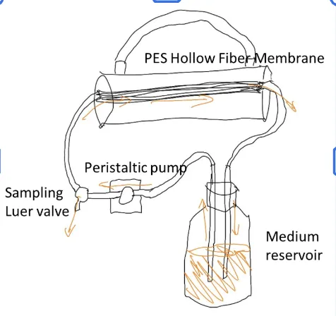
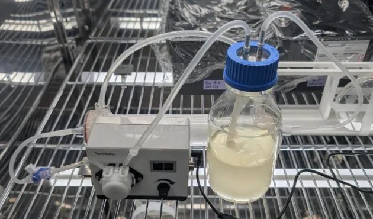
Test
Within early phase testing, the peristaltic pump achieved the target flow rate of 94 mL/min; however, the trial was prematurely terminated due to localized medium leakage within the peristaltic pump. We then evaluated microbial viability, yielding final OD600 readings of 0.304 (in-tube) and 0.48 (medium reservoir) (Figure 3). To confirm the microbial presence and viability, 2 mL of the medium was extracted from the Shell side of the Hollow fiber membrane and was plated on LB agar to examine colony formation. From this, we observed the absence of colony formation, providing functional proof that our bioreactor is bio-safe for public agricultural usage.
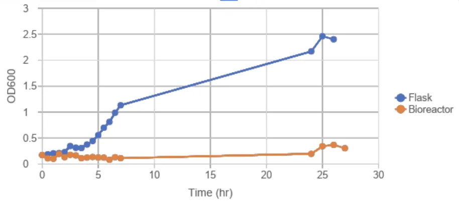
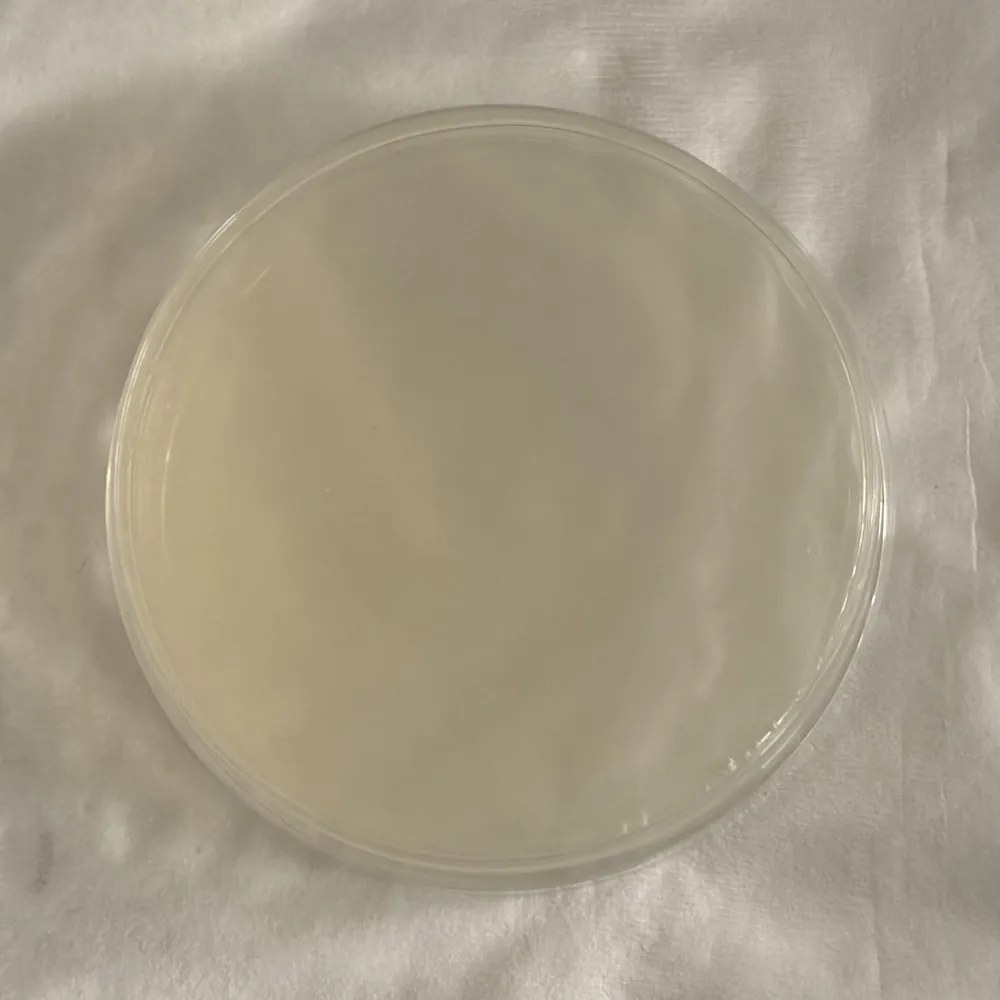
Learn
The divergent OD600 values between the tube and reservoir indicated poor microbial viability and pointed to two key hardware limitations for the next DBTL cycle. Exhibiting these factors, we hypothesize that the lack of active mixing led to nutrient stratification and cell sedimentation within the reservoir, limiting growth. In order to address the mechanical leakage, we identified the need for biocompatible tubing (BPT) to ensure higher durability and more stable sealing between transition points of the pump. Furthermore, to overcome the observed lack of microbial growth, we plan to incorporate an active magnetic stirring mechanism, inspired by the Biology laboratory Hot plate magnetic stirrer, to prevent sedimentation and ensure a homogeneous nutrient distribution. In addition, to improve the data collection accuracy and minimize contamination risks, we plan to relocate our initial sampling ports directly to the medium reservoir’s outlet within our next DBTL cycle.
Cycle 2Culture Bacillus subtilis 168 in 37 ℃ Magnetic stirring added: the bioreactor reached plateau (OD600 ~0.8 to 0.9) after 2 hours, the flask after 4.5 hours.
Design
Improving on the previous design, a 200 rpm magnetic stir was added to the medium reservoir to prevent sedimentation and ensure a homogeneous nutrient distribution. In addition, the sampling sector was placed closer to the medium reservoir to acquire a more accurate measurement as the reservoir holds much more relative volume compared to the hollow fiber membrane, giving us a more averaged prediction of the total OD of the entire bioreactor module.
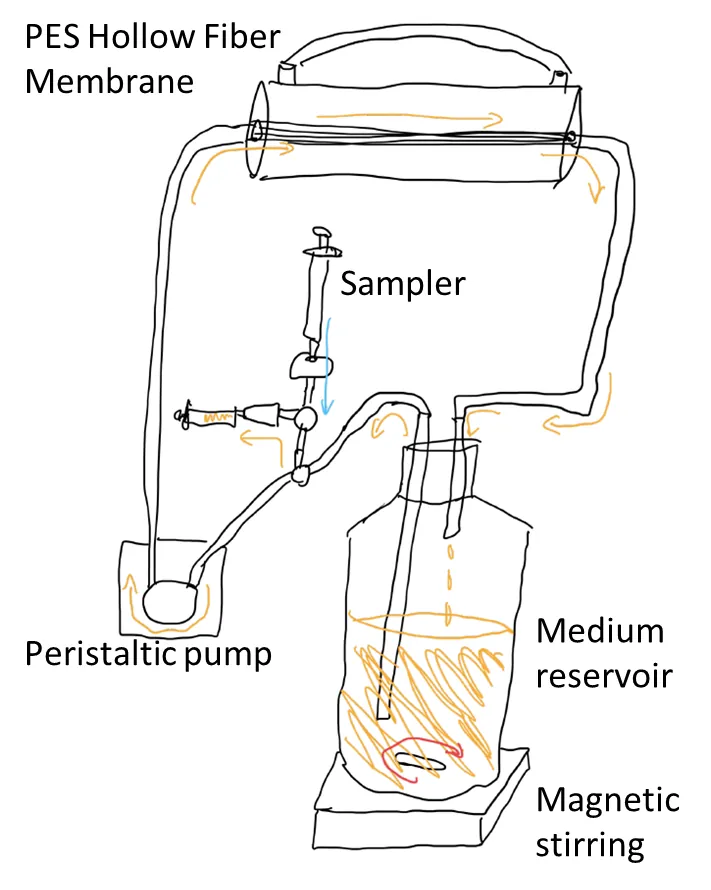
Test
As before, the peristaltic pump maintained the target flow rate of 94 mL/min for the entirety of testing. However, instead of experimenting with room temperature, the bioreactor (experiment) and flask (control) were maintained at 37 degrees Celsius. In contrast to our last attempt, this time the experiment ran successfully, helping us secure the full growth curve of our bacteria, with the bioreactor reaching the plateau phase (OD600 ~0.8 to 0.9) after 2 hours, and the flask reaching the plateau phase (OD600 ~0.6 to 0.8) after 4.5 hours.
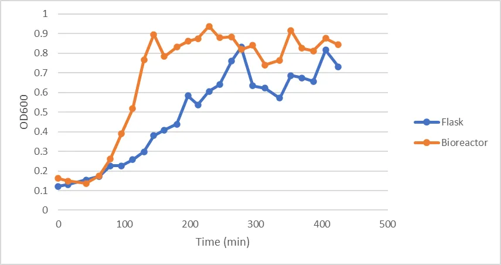
Learn
The successful generation of the OD600 growth curve confirmed and justified that adding the continuous magnetic stirring mechanism is crucial to preventing sedimentation and maintaining optimal system efficiency. Moving forward, the next DBTL cycle will evaluate the system's performance and growth kinetics at a reduced temperature of 22 °C. Moreover, to ensure the long-term reliability of our Bioreactor and prevent tube degradation observed in earlier trials, upgrading to higher-durability BPT tubing is necessary for the next round of testing.
The flask's working volume, inoculum and shaking speed were not recorded, and this cycle changed stirring, sampling point and temperature together, so read the reactor and flask comparison as promising rather than controlled.
Expert feedbackFirst meeting with Professor Chang 18 June 2026: scale-up, foaming, transmembrane pressure, membrane size and OD600 limits.
On June 18th, 2026, our team met in person with Professor Chang Chia-Hsiu (張嘉修), an expert in plant pathology. This meeting was a defining moment for ReLeaf, shaping our hardware designs in many fundamental ways. The meeting mainly focused on the feasibility of our hollow-fiber bioreactor design and scaling challenges we anticipated for ReLeaf.
Scale-Up
Professor Chang highlighted several unpredictable bottlenecks when scaling. He noted that heat transfer behaves differently between small and large vessels, and that B. subtilis favors higher temperatures for faster growth, a factor that becomes harder to control at scale.
Foaming Management
Excessive foaming was identified as a major concern, particularly because it can damage the hollow fiber membrane. Professor Chang pointed us toward two possible solutions: mutating the gene responsible for surfactant production or using chemical defoamers. Mutating the gene stops the problem at the root, but is more challenging, whereas chemical defoamers are easy to implement but may be less effective.
Transmembrane Pressure
One of the most significant gaps Professor Chang identified was that our design lacked a pressure or driving force to push the protectant from the lumen side (where it is produced) to the shell side (where it leaves the hollow fiber membrane). He explained that increasing flow rate would not solve this problem, since it only recirculates the fluid rather than generating outward pressure. He recommended adding a valve to build pressure while reducing tube diameter to concentrate the outward force.
Hollow Fiber Membrane
Professor Chang advised that our current membrane may be oversized, increasing the risk of cells adhering to or clogging the fiber walls. He recommended decreasing the membrane size and emphasized that we should be prepared to clearly justify our choice of hollow fiber technology to judges. He also stressed that monitoring flow rate and transmembrane pressure is essential, as these indicate membrane fouling (caking).
OD600 Measurement
For optical density measurements, he noted a key limitation: once OD600 exceeds 1, samples must be diluted before accurate readings can be taken.
This meeting directly shaped our hardware roadmap. Most notably, we identified the need to create a pinch valve to generate the pressure required to push protectants, a gap in our design we hadn't previously recognized. We also came away with several long-term considerations to investigate further: preventing foaming, reducing membrane and tube dimensions, and scaling.
3.2 In-Line Flow-Cell Photometer
A subsystem of the ReLeaf bioreactor.
The In-Line Flow-Cell Photometer, which will also be consistently referred to as our “photometer” in the rest of this wiki, is the optical density monitoring subsystem of our bioreactor. It has the ability to draw continuous, live data from the lumen loop of our hollow fiber bioreactor by passing the medium in which our bacteria lives through a 2 mm wavelength path flow cuvette where the optical density of the bacteria in solution is then recorded and plotted on our continuous data graph. This can be done without ever drawing a sample of our solution. This document reports the DBTL cycles of our photometer that we’ve continued to develop across this 2026 iGEM year. To dive deeper into the reports on how our photometer system could be reproduced, the specific part numbers and 3 dimensional CAD files that we designed are provided at the bottom of the document. On this wiki they are on the photometer page.
Cycle 1In-Line Photometer Light Path The measured spacings became the fixed geometry for every build after this one.
Design
Before anything was printed we had to know where each optical component actually belongs. We used magnetic helping hands, the clip tool that holds parts locked in place and is normally used for soldering, to hold our 600 nanometer LED in line with a purchased paralleling lens. That gives us parallel light, which we then block with a 2 mm slit so only a small portion of the beam continues through a beam splitter and on to two lux sensors.
Build
We locked the LED, slit, beam splitter and both lux sensors in position relative to each other and left only the paralleling lens free to move. Fixing everything else made the lens position the single variable. That is what let us read off the real world distances we would need for a 3D CAD model of the photometer layout, one that passes the light through smoothly and cleanly enough to gather consistent data, rather than guessing at them.
Test
With the other components locked down, we shifted the paralleling lens along the axis until the light path steadily illuminated both sensors. Doing that meant nudging the slit and the sensors slightly as well, to bring the path into line. Then we measured the distance between every component and turned the layout into a drawing our drylab hardware team could develop into a CAD model with everything anchored in place.
Learn
The measured spacings became the fixed geometry for every build after this one. We measured the tip of the LED to the focal lens at 5.5 cm, the lens to the center of the beam splitter at 10 cm, and the center of the beam splitter to each sensor at 2 cm.
Cycle 2In-Line Photometer V1 Stand the light path up so bubbles rise out of it, and tighten the component tolerances.
Design
V1 turns the bench layout into a self-contained instrument that sits in the loop. Two decisions shaped it. The light path stays flat and horizontal, since the bench arrangement was already on one plane and that was the most direct way to translate it into a printed part. And every component stays independently adjustable, because we did not yet trust the cycle 1 spacings to be final and expected to keep tuning the alignment. The flow cuvette goes in line with the recirculating loop rather than being filled by hand, so the culture is measured where it already flows and nothing has to be drawn out to read it.
Build
The whole optical train mounts on a single printed rail. Each component sits on the rail and slides along it, set by hand against the distances from cycle 1. The flow cuvette is plumbed into the recirculating loop with tubing at both ends, so the instrument reads the culture as it passes through.
Test
Data fluctuation was way too drastic due to bubbling within the flow cuvette as well as high tolerance for lenses and beam splitters.
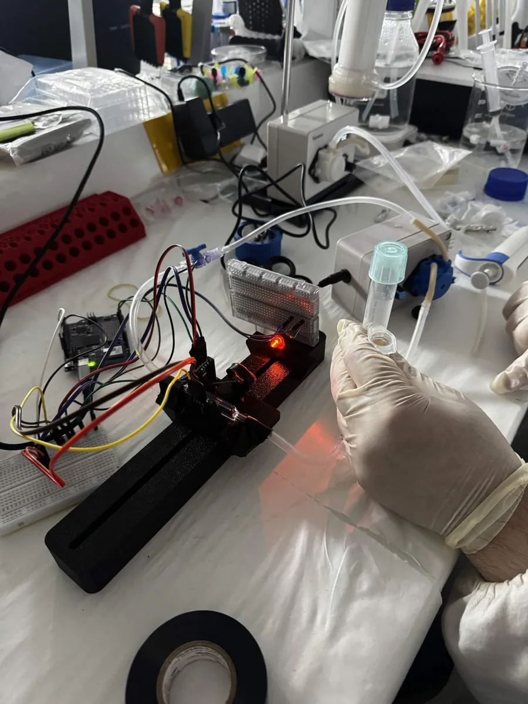
Learn
Two problems, and both were structural rather than electronic.
The data fluctuated drastically. Bubbles in the flow cuvette were sitting directly in the beam, and with a horizontal path a bubble had nowhere to go. It parks in the light and stays there until flow happens to push it out, so a single bubble can corrupt a long stretch of readings.
The independently adjustable mounts were also too loose. The lens and beam splitter could drift between runs, which meant the geometry we so carefully measured in cycle 1 was not actually being held. Adjustability helped during alignment and hurt everywhere else.
Both point the same direction. Stand the light path up so bubbles rise out of it, and tighten the component tolerances.
Cycle 3In-Line Photometer V2 The optics were not the main problem. Our calibration procedure was.
Design
V2 stands the light path up. The LED fires upward through the flow cuvette, so a bubble in the cell rises along the beam axis and leaves the light instead of settling in it. This uses buoyancy to solve the problem rather than relying on flow to sweep bubbles out, which is what failed in V1. We also gave up most of the adjustability in exchange for tighter seats, since by this point the cycle 1 spacings were the thing we wanted held rather than the thing we wanted to keep changing.
Build
A wide square base plate was printed with a mounting adapter for the rail, so the assembly stands rigidly on the bench with the optical axis vertical. The component seats were tightened so the lens and splitter hold their measured positions.
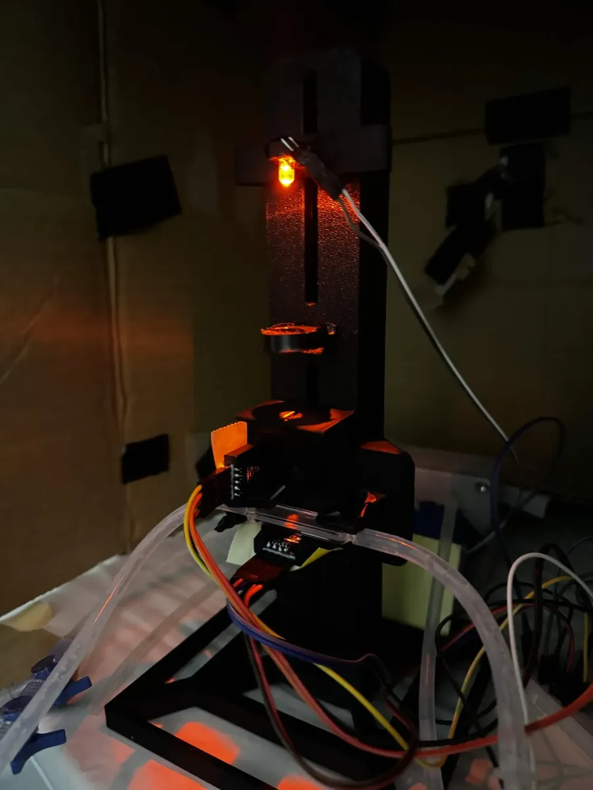
Test
We ran two samples through V2 and compared the result against the Bio-Drop. The instrument was zeroed on the growth medium, so medium reads 0 by definition. The second sample was 2 mL of titanium dioxide suspension, which gives a stable scattering target that does not grow or settle out between readings the way a culture would.
| Sample | Reference | OD | |
|---|---|---|---|
| Medium | 660 lux | 92.5 lux | 0 au |
| 2 mL titanium dioxide | 495 lux | 92.5 lux | 62.5 au |
The reference channel held at 92.5 lux across both readings. That tells us the source was stable between measurements, so the drop on the sample channel came from the sample and not from the LED.
Learn
The optics were not the main problem. Our calibration procedure was.
We had been blanking Releaf against growth medium. The Bio-Drop is calibrated on distilled water. That means the two instruments were reporting absorbance relative to different baselines, and the roughly 20% disagreement we had been attributing to our optics was largely a procedural artifact.
This is where our calibration standard protocol comes from. The blank is distilled water, so our baseline matches the instrument we validate against, and every comparison after this cycle uses it.
Cycle 4Angled Stand The tilted geometry holds up; the reference channel moved 6.4%, which shaped V4.
Design
Standing the path up helped, but bubbles still paused in the cell. Tilting the whole instrument means no surface inside the cuvette is horizontal, so a bubble has a continuous upward path along the wall and nothing flat to rest against. We put the tilt in a wedge under the body rather than building it into the optics, which keeps the cycle 1 beam geometry untouched and lets us reprint the wedge at a different angle without disturbing the alignment. We also decided to stop treating bubbles as purely an optical problem and remove gas from the loop before a run instead.
Build
The body sits on a printed wedge with structural support underneath so it does not flex under its own weight. A dual luer valve with syringes is fitted to the loop, used to bleed gas out before the instrument is started.
Test
We zeroed on medium and ran two titanium dioxide suspensions through the same cell, 1 mL and 2 mL, using titanium dioxide because it scatters light consistently and does not grow or settle the way a culture would. The sample channel dropped from 137.63 lux on the blank to 120.44 lux at 1 mL and 111.62 lux at 2 mL, giving readings of 0.3712 and 0.5785 au. The reference channel sat at 17.23 lux on the blank and 18.33 lux on both samples.
| Sample | Reference | OD | |
|---|---|---|---|
| Medium | 137.63 lux | 17.23 lux | 0 au |
| 1 mL Titanium Dioxide | 120.44 lux | 18.33 lux | 0.3712 au |
| 2 mL Titanium Dioxide | 111.62 lux | 18.33 lux | 0.5785 au |
Learn
The instrument responds in the right direction and separates the two concentrations cleanly, so the tilted geometry holds up. Doubling the titanium dioxide only moved the reading by a factor of 1.56, which we cannot yet explain from this data alone.
The reference channel is the bigger finding. It moved 6.4% between the blank and the samples, and the reference beam is split off before the sample, so nothing in the cuvette should be able to change it. Either the source drifted or the reference path is picking up light it should not see. Ambient light is the other candidate, since the path is open to the room and neither sensor is shielded from it. A reference channel we cannot trust is a reference channel we cannot correct with.
Everything so far has also been static samples held in the cell. Titanium dioxide tells us the optics work, but it does not move, does not grow, and does not produce bubbles. The instrument has to hold up on culture flowing through the loop over a long run before any of this means anything.
That is what shapes V4. We need the light path enclosed from the LED to both sensors so only our own source reaches them. We need direct control of the LED rather than running it at a fixed drive, in case the source itself is drifting. We need to see both channels live during a run instead of reading them off at the end. And then we need to put real culture through it.
Cycle 5In-Line Photometer V4 and the 22 °C B. subtilis 168 Growth Curve A continuous in-line run that passed 400 hours without a single sampling event.
Design
V4 is the version we ran the long experiment on. Three changes carry it.
- Component positions are fixed at their default alignment. Nothing slides any more, which removes the drift that hurt V1.
- Every mount surface that touches glass is lined with TPU. It grips the cuvette and lens firmly and stops the rigid printed material scratching the optical surfaces. Scratches on a 0.2 mm cuvette window are not cosmetic, since scattering from a damaged surface reaches the same detector as scattering from cells.
- Snap-in covers run the full length of the light path from LED to sample sensor, so no room light reaches either detector. A photometer that responds to the lights being switched on is not measuring the sample.
Build
The instrument runs on an Arduino UNO Q. Both lux sensors report over the same bus. The interface is a live web dashboard served on the local network, so the run can be watched from any machine without touching the rig.
The dashboard shows current OD600, elapsed time, sample lux, reference lux, the sample to reference ratio, the bubble and outlier rejection rate, and the running data point count.
Test
A continuous run of engineered B. subtilis 168 at 22 °C, drawn from the bioreactor loop and passed through the flow cell in line, so no sampling event interrupted the culture and no material was removed to measure it. The run passed 400 hours.
Snapshots from the run, all from the same experiment. At 3d 7h 57m the dashboard read 586 points, OD 0.7661, sample 171.67 lx, reference 26.67 lx, ratio 6.44x, reject rate 42.9%. At 6d 20h 58m it read 1097 points, OD 0.7683, sample 171.49 lx, reference 26.67 lx, ratio 6.43x, reject 14.3%. At 7d 21h 28m it read 1244 points, OD 1.1804, sample 141.85 lx, reference 26.67 lx, ratio 5.32x, reject 0%.
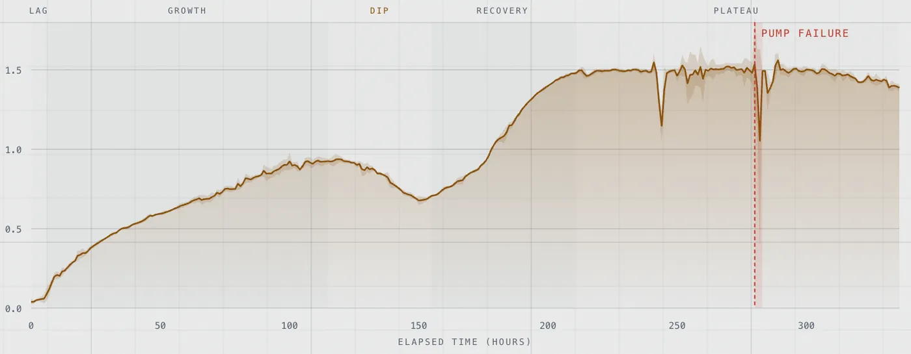
The full trace, traced from the dashboard, is drawn on the photometer page.
Learn
The run covers lag through decline in one unbroken series, which is the thing a manual sampling routine cannot produce. It is also where the instrument’s limits became visible.
- Noise is tight below about 0.4 OD and ragged above about 0.8, so the useful precision is not flat across the range.
- The rejection rate moved from 42.9% to 14.3% to 0% within one run. Those cannot all be cumulative, and the rejection rule is not yet written down anywhere. It needs stating as a rule, including the window the rate is computed over, before any filtered data appears on the wiki.
- The dashboard expects a sample to reference ratio near 10:1 and we measured 5.3x to 6.4x, so either the split ratio or the expectation is wrong.
- It is still unresolved whether the reported OD uses the reference channel or only sample against blank. The two disagree, and that has to be settled before the growth curve can be published.
Cycle 6Calibration Using TiO2 The raw, uncalibrated output already matches the Bio-Drop to a median paired difference under 4%, so no calibration transform is needed.
Design
We needed to design a way in order to ensure that our photometer data readings were aligned with real world values. However, using culture to calibrate would lead to issues in growth time, settling, or cell lysis, leading us to come up with TiO2 suspension as a stable scattering target. The iGEM standard for OD600 calibration is actually done with the help of SiO2, but because we had TiO2 readily available, it performed nearly exactly the same when suspended in 1% SDS solution, and was much cheaper, we decided to delay our SiO2 calibration and began preparing known concentrations of TiO2 running through 500 mL solution.
We used a Bio-Drop cuvette spectrophotometer as our reference instrument for this calibration assessment and ran the calibration curve twice.
The two tests probed at different things. The first test that we ran (Test 1), we increased the amount of TiO2 within our solution by 1 gram at a time for 40 data points, giving dense sampling that resolves how linear each instrument is across the full range. And for the second (Test 2), we increased the amount of TiO2 within our solution by 1 gram at a time until we hit 10 grams, where we began to increase by increments of 5 instead until 60. This gave a wider range with uniform spacing that gives the cleanest direct agreement comparison after we already proved strong linearity. We decided to start off with smaller increments deliberately, to create a more accurate low-density measurement region just in case our in-line photometer proved inaccurate at low values.
Build
The calibration loop consisted of a magnetic stirrer, a peristaltic pump, our photometer, and a 500 mL reservoir. The reservoir cap had holes for the inlet of the photometer loop, the outlet of our loop, a sampling port, and an air hole that prevented a vacuum from forming during sampling or pressurization when adding TiO2.
Because scattering rises linearly with the mass of an inert, suspended particle, the mass of TiO2 added serves as a common ground-truth linear axis in which both instruments can be judged independently, not only against each other.
Test
Two single-point exclusions were applied, each on objective grounds, and both are shown as open markers in the figures rather than deleted. In Test 1, the mg = 37 Bio-Drop reading is a handling error, off the trend of its neighbors. In Test 2, the mg = 5 Bio-Drop reading violates monotonicity: it exceeds the readings both above and below it, which is impossible for an increasing standard. In both cases, the paired Releaf reading is on trend, confirming the error is in the reference measurement, not the photometer, and proving the effectiveness of an in-line measurement device.
6.3.1 Baseline Linearity, goodness of fit (Figure 1, Test 1)
The raw uncalibrated Releaf output agrees with the Bio-Drop readings to a large
extent. Test 1’s data shows a slope of near 1, and a y-intercept of near
0, when the graph of (Releaf x, Bio-Drop y) is drawn.
6.3.2 Linearity against the ground-truth standard (Figure 2, Test 2)
Plotted against TiO2 mass added, both instruments track the standard
closely across the full range, each regressing against mass at R² > 0.999
(Releaf 0.9999, Bio-Drop 0.9998). The raw uncalibrated output is linear in true
concentration to the same degree as the reference instrument.
6.3.3 Direct agreement with the reference (Figure 3, Test 2)
Plotted directly against the Bio-Drop with the line of identity, the raw Releaf
points fall along y = x, agreeing to a median paired difference of 3.8%.
The raw, uncalibrated instrument therefore matches the reference across the working
range without any transform. A line fit through the raw Test 2 points has a
residual scatter of RMSE = 0.011 OD600 (R² = 0.9997) about
that line; this quantifies the tightness of the raw agreement and is not a
correction applied to the data.
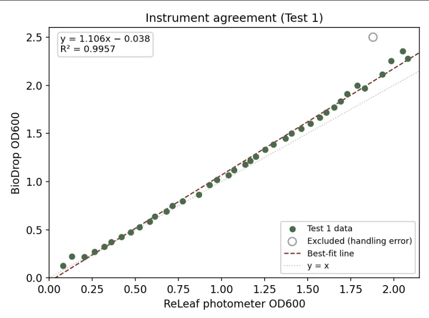
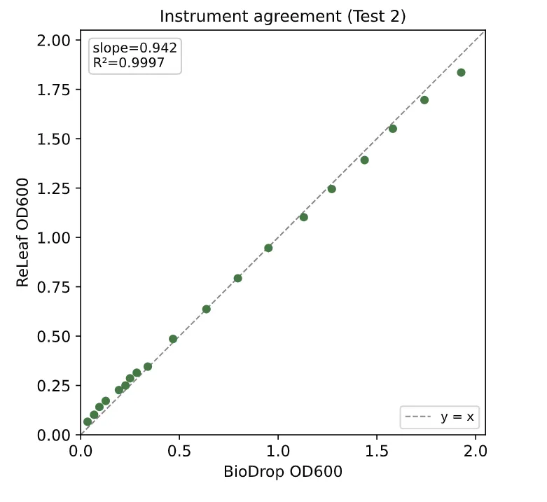
Corroboration across the two runs. The two runs therefore agree with the Bio-Drop to within a few percent independently of each other (Test 2 over a narrow range with fine uniform spacing, Test 1 over a wider range reaching higher density; both sets of figures above). Because the raw output holds this agreement across two separate runs rather than a single fit, the readings can be trusted across the working range without a calibration step.
Learn
The runs answered the question we built them for, but not in the way we expected. We originally expected the Releaf readings would need a calibration transform, fit against the Bio-Drop, to report real-world OD600; instead the two runs showed that no calibration is needed. The raw, uncalibrated Releaf output already sits near one-to-one with the reference (median paired difference under 4%) and tracks the ground-truth mass standard with a residual scatter no larger than the Bio-Drop’s: in Test 1, 0.024 OD600 for Releaf against 0.030 for the Bio-Drop.
This changed our plan. Because agreement is already within a few percent, and because the Bio-Drop is itself the slightly less linear of the two instruments against the ground-truth standard, fitting our readings to the Bio-Drop would tie them to the reference instrument’s own measurement error without improving agreement that is already tight. A calibration step, in other words, could make the readings worse rather than better. On the evidence of these two runs we therefore treat calibration as unnecessary rather than pending, and every reading in this wiki, including the continuous growth curve, is reported directly from raw uncalibrated Releaf output.
Two properties emerged from this cycle. First, within the range where a cuvette spectrophotometer is trusted, the uncalibrated photometer matches it to within a few percent across the full working range. Second, and categorically, the Releaf photometer records these readings in line and continuously, drawing culture through the flow cell without withdrawing a sample or interrupting the culture. A cuvette instrument cannot monitor a live bioreactor; it measures grab samples one at a time. That continuous capability, demonstrated in Section 3.5, is what makes the instrument useful for closed-loop monitoring rather than merely accurate.
The SiO2 calibration we deferred in the Design stage remains available as a future check, but on the strength of the TiO2 comparison it is a confirmation step, not a dependency.
Cycle 7 Calibration Using SiO2 Not written yet.
Cycle 8 Simplified Photometer Not written yet as a cycle. The rationale, design changes and first bench result are in Part 8 of the photometer page.
3.3 Hollow Fiber Membrane, Pressure, and Flow Control
- DBTL cycle 1: Pressure transductor
- DBTL cycle 2: Transmembrane pressure and ΔP-Q measurement round 1
- DBTL cycle 3: Flowmeter and ΔP-Q measurement round 2
- DBTL cycle 4: Magnetic pump test
For our Final Bioreactor Configuration, we also planned to integrate a Pinch Valve and Pressure Sensor, linking them up through code in order to increase the efficiency of Protectant secretion through our Hollow Fiber Membrane. To do this however, we needed to prove that the relationship between measured pressure and flow rate of our bioreactor is linear in order to manage the rest of our bioreactor functions. This test utilized our hollow fiber membrane, T-valves, as well as our Pinch Valve and Pressure Sensors.
Not written yet: the build, results and learnings of the four cycles above, which are the team's outline.
3.4 Bioreactor Integration
Cycle 1Bioreactor v1 ACC deaminase was successfully secreted to the shell side but expression is weak.
Design
This cycle tests integration, not the optogenetic circuit. ACC deaminase is placed under a constitutive promoter so the strain expresses continuously, which removes light control as a variable. Culture circulates through the lumen side, protectant crosses into the shell side, and cells cannot. Everything else in the loop exists to keep that separation running unattended. A peristaltic pump circulates the culture, a medium reservoir feeds it, the in-line photometer reads OD600 without opening the system, and pressure and flow sensors confirm perfusion holds at the set rate.
Build
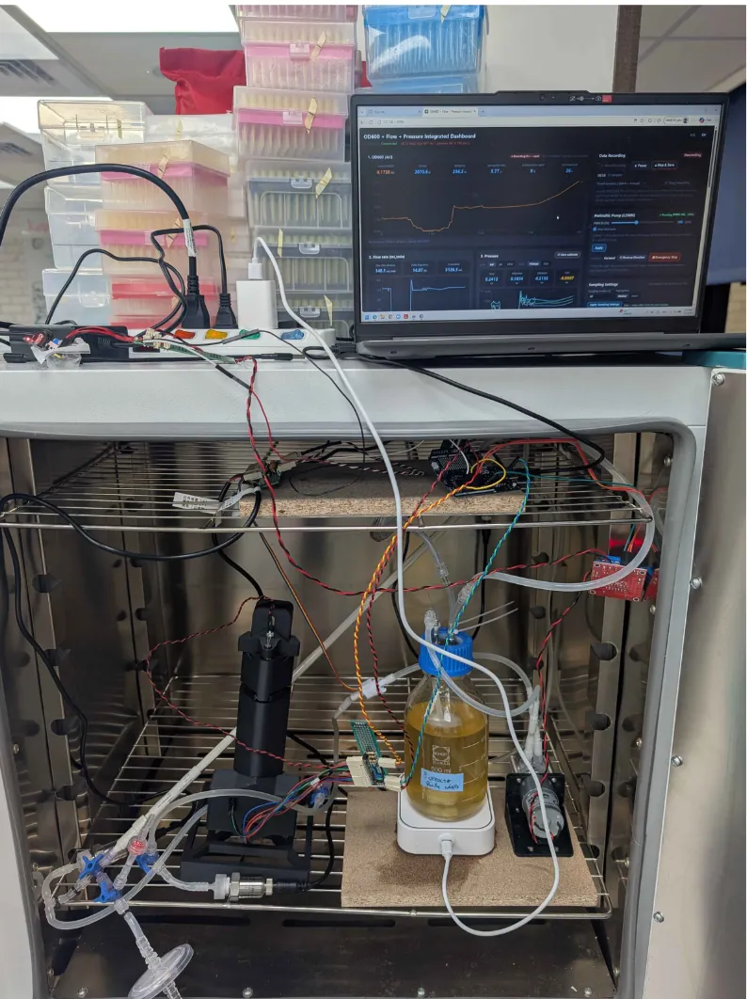
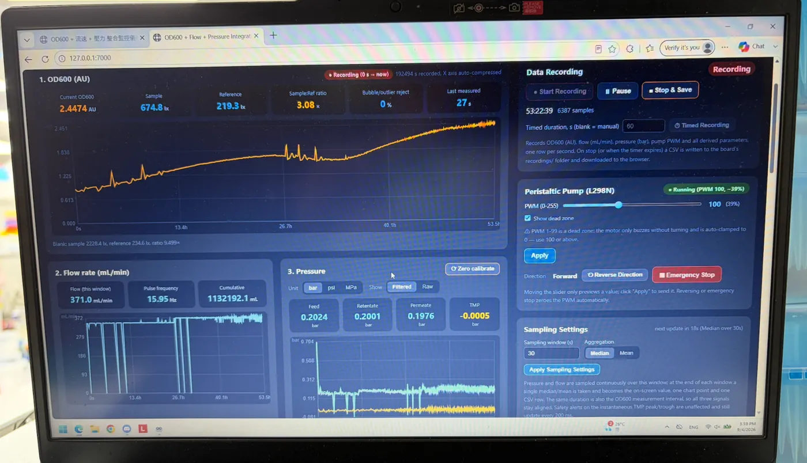
Test
Engineered B. subtilis was run in the system and ACC deaminase was secreted across the membrane.
Learn
ACC deaminase was successfully secreted to the shell side but expression is weak.
Also in this cycle
- Bioreactor operation system v1 and v2
- Integration of HFM, sensor, pump control, and power supply
- CIP method
Cycle 2Bioreactor v2 Not written yet.
- Bioreactor operation system v3
- Pressure transductor release valve
- Automated Luer valve controller
- Pinch valve
Not written yet. The list above is the team's outline for this cycle.
Cycle 3Bioreactor v3 Not written yet.
- Light control
- Inline pH meter
- Developed UI
- Biosecurity secondary design
Not written yet. The list above is the team's outline for this cycle.
Expert feedbackSecond meeting with Professor Chang 4 September 2026: 22 °C growth, quantifying protectant, and farmer accessibility.
Our team met with Professor Chang Chia-Hsiu (張嘉修) again on 9/4, 2026. This was 3 months after the first meeting, which happened during the initiation phase of our project. During this time, we had conducted several experiments already and had built a fully functioning bioreactor with a user interface. The main goal of the meeting was consequently to validate our work and identify ways to improve. It was a valuable chance to make sure we were on the right track and didn’t overlook anything.
Bacterial Growth at 22 °C
In our test of B. subtilis’s growth at 22 °C, we observed an inconsistent growth pattern. This problem was also present in the newer experiment with our engineered B. subtilis. Professor Chang raised two possible reasons: the bioreactor was either contaminated, or this could be a characteristic of the strain we chose, and he asked whether we had tested plasmid stability. Professor Chang's main recommendation was thus to repeat the experiment, since this kind of inconsistency is common but hard to explain from a single run. If a repeat trial behaves correctly, that's sufficient confirmation to move forward.
Quantifying Protectant Production
Professor Chang reminded us that judges will likely ask how we confirm protectant release. Since B. subtilis can't produce a fluorescent marker like neon, and true quantification methods may be too costly, we discussed alternatives: a DNPH assay, hydroponic testing, and possibly color-based indicators so farmers could visually gauge bacteria/protectant density themselves. Professor Chang's underlying prompt was for us to think concretely about how we demonstrate that protectants are actually being produced.
Real-World Usage & Farmer Accessibility
On future usage, Professor Chang advised that for realistic deployment we should make the bioreactor more modular and easy to handle. The more farmer-friendly the system is, the more attractive it becomes. Ideally the B. subtilis component would be a simple replaceable capsule, similar to swapping a battery, rather than requiring hands-on technical control. Another point he mentioned is that he felt our current language creates distance from a farmer's perspective. Professor Chang advised simplifying phrasing and tying the project explicitly to the SDG. This way, farmers can better understand why having our bioreactor is a good idea.
This meeting was insightful and helpful. Professor Chang not only gave us advice on how to conduct experiments, but also pointed out weak spots we did not identify. He advised us to find a reliable way to quantify protectant production and reframed our presentation to be more farmer-accessible and SDG-linked. With this information, we can make the ReLeaf bioreactor even more effective and accessible, helping us expand our impact.
Final Design (Lab)
4.1 Key Specifications
The final CAD is the model at the top of this page. The specification is still under discussion in the team; the values below are the ones stated in the cycles above and in the assembly guide's parts list.
| Working volume | 300 mL LB in a 500 mL reservoir |
|---|---|
| Membrane | PES hollow fiber membrane, 0.2 µm pore |
| Flow rate | 94 mL/min |
| Stirring | 200 rpm magnetic stirrer |
| Tubing | Biocompatible tubing (BPT) |
| Temperature | 37 °C (cycle 2); 22 °C growth curve (photometer cycle 5) |
| Pumps | BP1000-DNUN64B peristaltic pump, 1 L/min; H0009 liquid pump, 1.5 L/min; CKP-DC-S08, 5 mL/min |
| Sensors | In-line photometer, pressure transducers, flow meter, pH sensor, droplet sensor, turbidimeter |
| LEDs | 3 m green light LED strip |
| Pressure regulation | Pinch valve |
4.2 Proof of Concept
Not written yet. The planned run links stress, sensor, green light, protectant and the hydroponics plate, and reports its flow conditions, temperature, pressure, and starting and final OD.
Containment & Safety
Making sure synthetic organisms don’t enter the wild is a responsibility for everyone working with genetically modified organisms. Likewise, biosafety is a top priority for the ReLeaf bioreactor.
5.1 How B. subtilis Is Contained: Cell Size vs. Membrane Pore Size
The ReLeaf bioreactor was designed to make sure our bacteria remain contained in the setup. The hollow fiber membrane physically blocks bacteria from leaving the lumen side, since the pore size of the membrane (0.2 µm) is much smaller than the cell size of B. subtilis (0.25 to 1.0 µm in diameter). To validate this theory, a simple test was conducted. When the bioreactor was running, we collected medium from the lumen and shell sides and plated them. After 24 h at 37 °C, the samples were compared with each other.

As shown, the hollow fiber membrane is a successful physical barrier to prevent B. subtilis from being released unintentionally into the wild.
5.2 Safety Precautions: Leak Prevention
The ReLeaf bioreactor has several mechanisms to prevent accidents from happening. For leak prevention, two systems work together. First, a droplet sensor is situated below the entire setup. This sensor notifies the user via the user interface.
Not written yet: the second leak system, sterilization and disposal.
Reproduction
6.1 Materials List
| Component | Quantity | Price (NTD) | USD |
|---|---|---|---|
| Magnetic Stir Bar | 1 | 120 | 3.78 |
| Spectrophotometer | 1 | 14,000 | 441.36 |
| Pump | 4 | 2,500 | 78.81 |
| Pressure Sensor | 3 | 1,800 | 56.75 |
| Hollow Fiber Membrane | 1 | 7,800 | 245.90 |
| Sampler | 1 | 400 | 12.61 |
| Air filter | 1 | 300 | 9.46 |
| Luer Valve | 6 | 180 | 5.67 |
| Reservoir | 2 | 180 | 5.67 |
| Flow meter | 1 | 350 | 11.03 |
| Luer Lock | 20 | 400 | 12.61 |
| pH sensor | 1 | 2,450 | 77.24 |
| Sum (must-have parts) | 30,480 | 960.91 | |
| Optional: DO sensor | 1 | 6,000 | 189.16 |
From the team's Bioreactor Cost Sheet (lab-use version). The sheet's Sum is the total of the price column as entered; whether each price is per unit or per line is not stated. The detailed cost analysis sits in the business plan.
6.2 Assembly Guide and Brochure
Not written yet.
The photometer's own step-by-step assembly (wiring, crimping and print settings) is already written up on the photometer page.
Limitations & Future Plans
7.1 Three-Chamber Concept
ReLeaf requires three protectants, and producing them one at a time on a single loop limits throughput. The intended form is three of these channels in a single housing, off one controller, each producing a different protectant concurrently.
7.2 B. subtilis and Medium Refill Mechanism
Planned, not yet drawn. Professor Chang's suggestion of a replaceable culture capsule, swapped like a battery (3.4), is the direction.